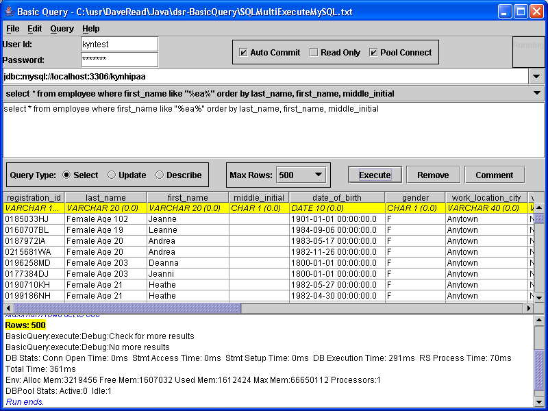

|  |
|
The main screen is divided into four major sections. The top portion of the screen controls the connection information. Information such as the id and password as well as the connection URL and connection attributes are set in this area. The next portion of the screen controls the actual SQL executed. It consists of a drop-down containing a history of executed queries and a query input text area. In addition, controls for limiting the number of rows to retrieve (for queries returning resultsets), as well as commenting-out or deleting stored queries, are located here. The third section contains the rows and columns retrieved when the SQL executed returns a result set. The table lists the column names as well as the database type and sizing information for each column. Below this will be the rows of data returned. The bottom portion of the window contains a scrolling message area containing information about the executed query. Error messages, output parameter values, and timing statistics are reported here. All of the information presented in both the results and message areas may be written to CSV files for later analysis. |